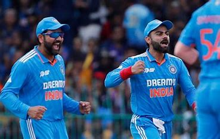
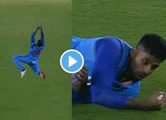
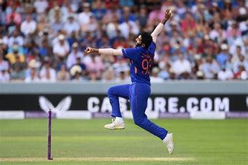
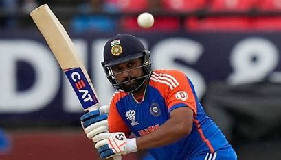
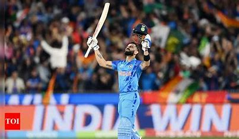
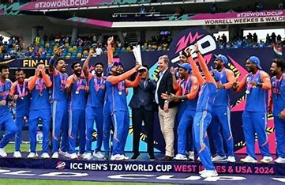

Spotlight events in final Match:
1.Ro-K0 Partnership:

Rohit Sharma and Virat Kohli ended their T20I careers on a high as India clinched the T20 World Cup 2024 title after defeating South Africa in the summit clash. Rohit led the Indian cricket team by example as he played a number of important knocks in the competition while Kohli saved his best for the final as he slammed a gritty half-century. In the aftermath of the win, they both announced their retirements from T20Is but not before etching their names in Indian cricket folklore. However, things were not as straightforward just one year ago where there were doubts over whether the two star cricketers will continue playing in the shortest format of the sport. However, according to a report, early calls on Virat and Rohit's future with the side ultimately led to India's massive success in the T20 World Cup 2024.
2.Surya's Catch won the match:

Suryakumar Yadav took a blinder on the boundary to seal an incredible last-over victory for India in the T20 World Cup 2024 final against South Africa. South Africa needed 16 off the last over, with David Miller and Keshav Maharaj at the crease. Hardik Pandya was the bowler. The first ball to Miller was a low full-toss, wide of the batter.In the T20 World Cup 2024 final, Suryakumar Yadav produced a moment of absolute brilliance. During the final over, India needed to defend 16 runs, and explosive South African batsman David Miller was at the crease. On the first ball of the over, Hardik Pandya bowled a full-toss just outside off-stump, and Miller heaved it straight down the ground. The ball seemed destined to sail over the boundary rope, but Suryakumar Yadav appeared out of nowhere to take an incredible catch. His momentum took him over the boundary, but he lobbed the ball back, steadied himself, and completed a sensational effort. This catch proved crucial as India went on to win the game by 7 runs, clinching their first T20 World Cup title in 17 years1. It was an emotional moment for the Indian side, especially after their defeat in the ODI World Cup 2023 final less than a year ago on home soil. Suryakumar’s spectacular catch stole the show and sealed victory for India! 🏆🇮🇳🏏23
3.Bumraha's unexpected over:

Chasing 177, they needed just 30 runs from 30 balls with five wickets in hand but fell apart under pressure at the death to finish 168 for eight.
Bumrah was the architect of their downfall, re-entering the attack with his side seemingly on the floor at the start of the 16th. Already an undisputed master of his craft, he only raised his reputation as he gave up just six runs from his next two overs and added the wicket of Marco Jansen to finish with two for 18.Bumrah was named the Aramco Player of the Tournament. He collected an impressive 15 wickets at an astonishing average of 8.26. His economy rate of just 4.17 was the best among bowlers who delivered a minimum of 20 overs in the tournament
4.Player of the match:Rohit

ollowing India's victory in the 2024 T20 World Cup, Rohit Sharma will continue to lead the team in the ICC World Test Championships (WTC) and the ICC Champions Trophy.
In a video message on Sunday, July 7, BCCI Secretary Jay Shah confirmed Rohit as captain for the ongoing WTC 2023-25 cycle and the ICC Champions Trophy in 2025.
Shah expressed confidence in Rohit's leadership, hoping he will guide India to the finals and win both tournaments.
He said, "I am confident that under Rohit Sharma's captaincy, we will win the WTC final and the Champions Trophy."
He dedicated the T20 World Cup triumph to Rohit, Virat Kohli, outgoing head coach Rahul Dravid, and Ravindra Jadeja.
5.Virat's 76:

Amid Virat Kohli's Poor Form In T20 World Cup, Ravi Shastri Gives Golden AdviceHaving made just 75 runs in seven innings so far, Kohli will be aiming for a royal finish to the 2024 T20 World Cup with a big score in the final against South Africa, in Barbados on June 29.NDTV Sports DeskUpdated: June 29, 2024 09:29 AM ISTRead Time: 2 min
Amid Virat Kohli's Poor Form In T20 World Cup, Ravi Shastri Gives Golden Advice
Virat Kohli after his dismissal against England in the T20 World Cup 2024 semi-final.© AFP
Virat Kohli's continued poor form in the ongoing 2024 T20 World Cup has brought in opinions from several cricketers, experts and fans alike. However, few people have seen Kohli's game from up close better than former India coach Ravi Shastri. Shastri and Kohli shared a great bond as coach and captain of Team India in all formats. After Kohli's failure against England in the semi-final, Shastri said that he should stick to his natural game without trying to be overly aggressive.
6.Finally the trophy:

The Indian cricket team ended their long global trophy drought after winning the T20 World Cup 2024 title. Having secured a thrilling win in Barbados, the Men in Blue bagged their first major title since ICC Champions Trophy 2013 and added another World Cup for the first time since 2011.India emerged victorious in the 2024 ICC Men’s T20 World Cup, led by captain Rohit Sharma. The team celebrated their triumph, and you can catch a glimpse of the trophy lift here. Additionally, Rohit Sharma will continue to lead the Indian cricket team in the ICC World Test Championships and the ICC Champions Tropht following their T20 Worldcup win.
Click here to see celebration